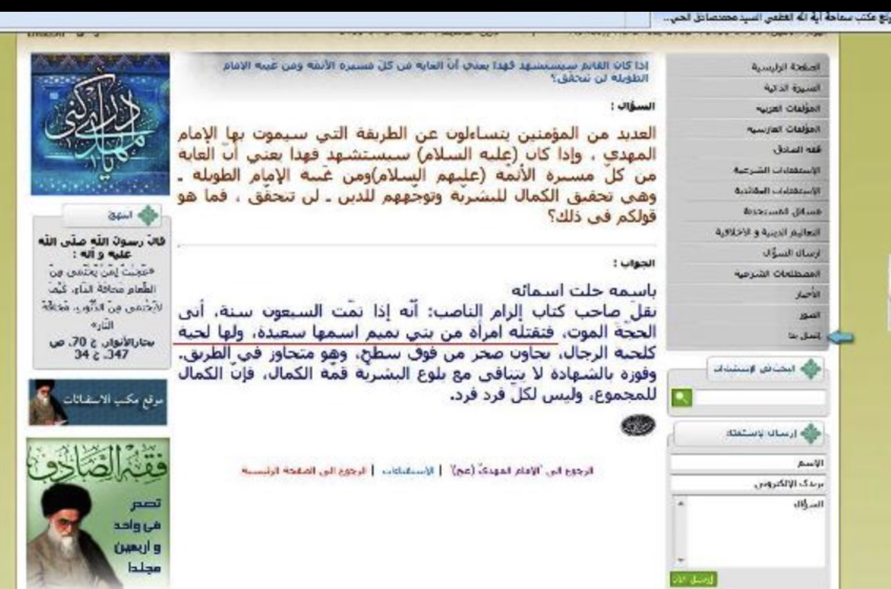
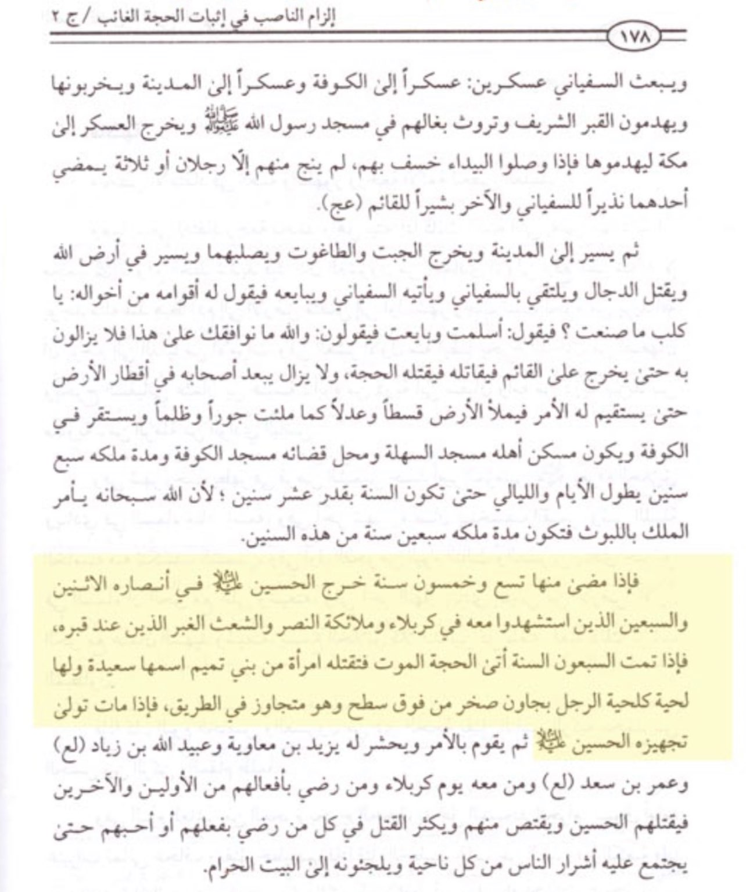

The Tranny Killer of the Rafidi Mahdi
Imagine there is a religion that teaches that there is a ‘infallible hidden Imam’ on earth who left his nation
without an infallible guide for over a thousand-year, who’s literally scared (despite all his alleged superpowers) of
being killed and then will be killed anyway, but by whom? By a bearded lady!
According to Shi’i scholars, the Rafidi Mahdi will be killed by some bearded tranny-like creature called Saeda, yes Saeda.

“Many of the faithful are asking how Imam Mahdi will die and if the Imam (peace be upon him) will be martyred this would mean that
is fate will be the fate of most of the Imams (peace be upon them), but since the occultation of the Imam – which is the perfection of
mankind and their guidance to the religion – has lasted so long, this (him being killed) has not occured yet. What is your opinion?
In His blessed names,
The author of Ilzam Al-Naaib has transmitted: “The Hujjah [hidden Imam] will die after seventy years are completed. A woman from the
tribe of Bani Tamim named Saeda will kill him. She will have a beard like a man.”
Source: ‘Ayatullah’ Sadiq Rouhani’s official website
Scan of the book he mentioned:

But what is interesting here is their hatred and grudge for a specific Arab tribe, the tribe of Bani Tamim is yet another supportive
evidence that the Rafidi Mahdi resembles the description of the Dajjal:
Abu Hurayra said: ‘I have continued to love Banu Tamim after I heard three things concerning them from Allah’s Messenger (ﷺ).
“They will be the sternest of my Ummah against the Dajjal; one of them was a captive owned by ‘A’isha, and he said: ‘Free her,
for she is a descendent of Ismail;’ and when their zakat came, he said: ‘This is the zakat of a people,’ or ‘of my people’.
[Sahih al-Bukhari 4366]